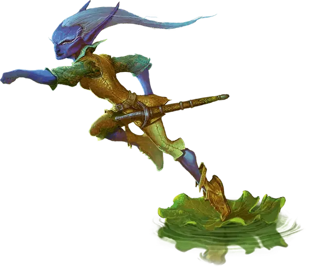

Квиклинг
Quickling
Крошечная Фея, хаотично-злая

Класс Доспеха 16
Хиты 10 (3к4 + 3)
Скорость 120 футов
| мод | спас | ||
|---|---|---|---|
| СИЛ | 4 | −3 | −3 |
| ЛОВ | 23 | +6 | +6 |
| ТЕЛ | 13 | +1 | +1 |
| мод | спас | ||
|---|---|---|---|
| ИНТ | 10 | +0 | +0 |
| МДР | 12 | +1 | +1 |
| ХАР | 7 | −2 | −2 |
Навыки Акробатика +8, Восприятие +5, Ловкость рук +8, Скрытность +8
Чувства тёмное зрение 60 футов, пассивное Восприятие 15
Языки Общий, Сильван
Опасность 1 (200 опыта)
Бонус мастерства +2
Среда обитания Лес
Особенности
Размытое движение. . Броски на попадание по квиклингам делаются с помехой, если только квиклинг не недееспособен или опутан.
Увёртливость. Если квиклинг подвергается эффекту, который позволяет пройти спасбросок Ловкости и получить только половину урона, то вместо этого он не получает урона при успешном спасброске и только половину при провале.
Действия
Мультиатака. Квиклинг совершает три атаки кинжалом
Кинжал. . Рукопашная или Дальнобойная атака оружием: +8 к попаданию, досягаемость 5 футов или дистанция 20/60 футов, одна цель. Попадание: 8 (1к4 + 6) колющего урона.
Описание
Они загоняют себя до смерти, а планы составляют с той же скоростью что и бегут.
– Эльминстер
Квиклинги носятся по странным, искореженным лесам, где обитают феи неблагого двора, и в Стране Фей и в этом мире. Они носятся так быстро, что едва заметны для глаз, и каждый кажется скорее размытым колебанием в воздухе.
Квиклинг – это маленькая, стройная фея, похожая на миниатюрного эльфа с острыми, звериными чертами. Их холодные, жестокие глаза мерцают как драгоценные камни.
Живи Быстро, Умри Молодым. Квиклинги обязаны своим существованием и состоянием Королеве Воздуха и Тьмы, ужасной правительнице Сумеречного Двора. Они когда–то были расой ленивых и эгоистичных фей, и слишком часто опаздывали на зов королевы. Чтобы ускорить их поступь и проучить за невыполнение её воли, королева уменьшила их и ускорила их внутренние часы. Проклятье королевы дало квиклингам их невероятную скорость, но так же и ускорило их жизнь – ни один квиклинг не живет дольше пятнадцати лет.
Слишком Быстрые для Слов. Мир смертных – это скучное место для глаза квиклинга: ураган медленно ползет по небу, поток водяных капель плывет к земле как ленивые снежинки, молнии крадутся извилистым путем от облака к облаку. Медленный и скучный мир кажется населен вялыми существами, и их низкой, мычащей речи недостает смысла.
Другим существам квиклинги кажутся ослепительно быстрыми, пропадающими в неразличимой размытой дымке при движении. Их жестокий смех похож на взрыв звуков стаккато, а речь на пронзительный визг. Только когда квиклинг умышленно замедляется, чего он предпочитает не делать, остальные существа начинают слышать, видеть и понимать его. Они никогда по–настоящему не отдыхают, «стационарный» квиклинг постоянно перемещается взад перед, как будто ему не терпится снова отправиться в путь.
Озорники, а не Убийцы. У квиклингов капризная природа, которая хорошо сочетается с их энергичностью: они думают так же быстро как и бегают, и всегда планируют что–то сделать. Квиклинг проводит большую часть жизни, проказничая над медленными существами. Они редко упускают возможность связать шнурки чьих–нибудь ботинок, передвинуть стул перед тем как кто–то на него сядет или расстегнуть седло пока никто не видит.
Но проделки такого сорта к сожалению не предел их изысканной зловредности. Они не совершают прямых убийств, но могут разрушить жизнь кучей других способов: украсть важное письмо, украсть монеты собранные для бедных, подложить украденный предмет в чью–нибудь сумку. Квиклингам нравится приносить страдания, которые превосходят простое несчастье, особенно когда вина за их действия ложится на других существ и создает раздор.